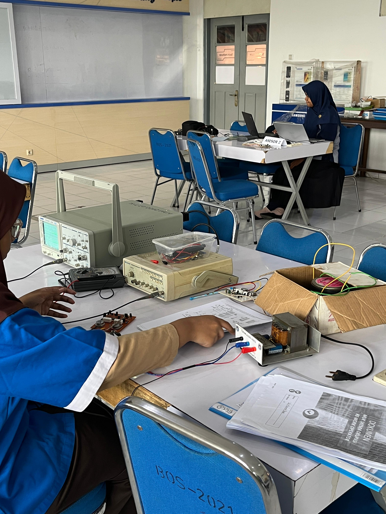
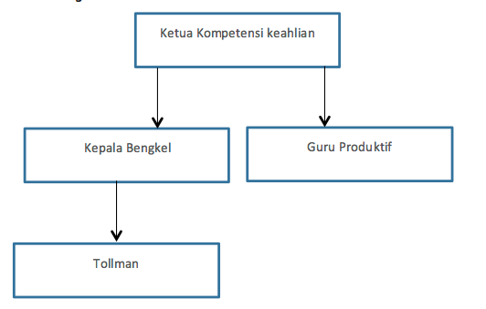
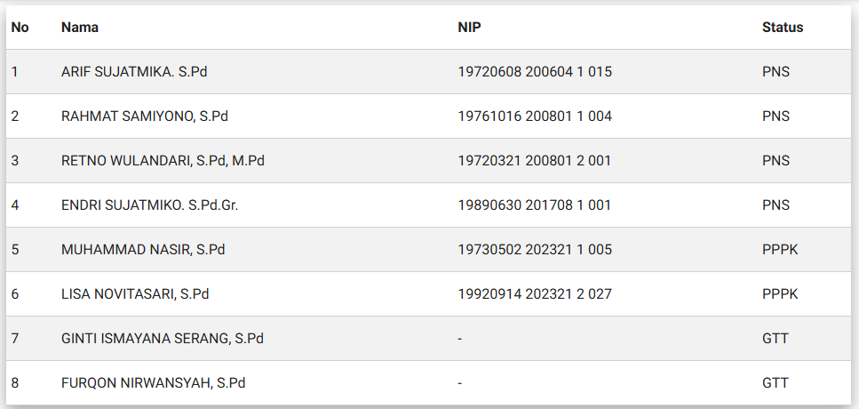
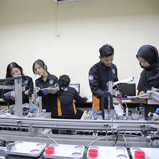

Profil jurusan TAV

Program Keahlian Teknik Audio Video (TAV) di SMK Negeri 2 Yogyakarta merupakan salah satu jurusan unggulan yang telah terakreditasi A dengan nilai 92.
Jurusan ini fokus pada pembelajaran teknik elektronika yang berkaitan dengan suara (audio) dan gambar (video) yang diproses secara elektronik
Struktur Organisasi Teknik Audio Video

Dasar Program Keahlian
1.Simulasi Digital
2.Teknik Kerja Bengkel
3.Teknik Listrik
4.Teknik Elektronika Dasar
5.Teknik Mikroprosesor
6.Teknik Pemrograman
Guru Pengampu

Paket Keahlian
1.Penerapan Rangkaian Elektronika
2.Perekayasaan Sistem Audio
3.Teknik Perkayasaan Radio & Televisi
4.Perekayasaan Sistem Antena
5.Perencanaan & Instalasi Sistem Audio
6.Perencanaan & Instalasi Sistem Antena Penerima
7.Perbaikan & Perawatan Peralatan Elektronika Audio Video
Profil jurusan MEKATRONIKA

Teknik Mekatronika adalah bidang teknik yang mengintegrasikan mekanika, elektronika, kontrol otomatis, dan pemrograman untuk menciptakan sistem otomatis dan cerdas.
Di SMKN 2 Yogyakarta, jurusan ini dirancang untuk membekali siswa dengan keterampilan dalam merancang, mengoperasikan, dan memelihara sistem otomatis berbasis teknologi terkini.
Struktur Organisasi

🏭 Fasilitas Penunjang
SMKN 2 Yogyakarta menyediakan fasilitas yang mendukung pembelajaran praktik, seperti:
1.Laboratorium Mekatronika: Dilengkapi dengan peralatan modern untuk praktik langsung.
2.Workshop Otomasi Industri: Tempat siswa mengerjakan proyek-proyek otomasi.
3.erangkat Lunak Simulasi: Software untuk merancang dan mensimulasikan sistem mekatronika.
🤝 Kerja Sama Industri
Sekolah menjalin kemitraan dengan berbagai industri untuk program magang dan penempatan kerja, seperti:
1.PT. XYZ Otomasi: Perusahaan yang bergerak di bidang otomasi industri.
2.PT. ABC Elektronika: Perusahaan manufaktur elektronik yang menyediakan tempat magang bagi siswa.
🎯 Prospek Karier
Lulusan jurusan Teknik Mekatronika memiliki peluang karier di berbagai bidang, antara lain:
1.Teknisi Otomasi Industri: Mengelola dan memelihara sistem otomatis di pabrik.
2.Programmer PLC: Merancang program untuk mengendalikan mesin otomatis.
3.Desainer Sistem Mekatronika: Merancang sistem yang mengintegrasikan mekanika dan elektronika.
🏆 Prestasi Teknik Audio Video (TAV) SMKN 2 Y

Dua siswa SMKN 2 Yogyakarta berhasil meraih Juara 1 dalam ajang Lomba Kompetensi Siswa (LKS) tingkat provinsi DIY tahun ini pada bidang Mechatronics, membuktikan keunggulan dan keterampilan mereka dalam bidang teknologi dan otomatisasi industri.

Dua siswa dari jurusan Teknik Audio Video (TAV) dan Mekatronika SMKN 2 Yogyakarta berhasil meraih Juara 3 dalam Lomba Kompetensi Siswa (LKS) tingkat provinsi DIY bidang Mobile Robotic, menunjukkan kolaborasi lintas jurusan yang solid dan kemampuan teknis di bidang robotika.

Satrio Wahyu Pituturjati, siswa kelas XII TAV 1 SMKN 2 Yogyakarta, berhasil meraih prestasi gemilang dalam ajang Kejurda Dayung DIY 2024. Ia memenangkan dua kategori sekaligus, yaitu Juara 1 Kayak Slalom Putra dan Juara 1 Canoe Slalom Putra. Lomba ini diselenggarakan di Laguna Glagah, Kulon Progo pada 11 Desember 2024.
🏆 Prestasi MEKATRONIKA SMKN 2 Y

SMKN 2 Yogyakarta meraih nominasi Harapan 1 dalam lomba Collaborative Robot (Lengan Robot Schneider) pada 13-15 Februari 2025 di Politeknik ATMI Surakarta. Tim terdiri dari Mikhael Habill Satria Wibawa (XI TAV) dan Gregorius Gandhi Rahadya (XI Mekatronika)

Juara 3 LKS Tingkat Provinsi DIY 2023 Bidang Mekatronika Siswa SMKN 2 Yogyakarta, Az Zahra Zidni AP dan Zepherinus Victoryo M.P., berhasil meraih Juara 3 dalam Lomba Kompetensi Siswa (LKS) tingkat Provinsi DIY tahun 2023 di bidang mekatronika.

Medali Emas The 11th All Komatsu Indonesia Technical Olympic 2022 Tim SMKN 2 Yogyakarta meraih medali emas dalam ajang bergengsi ini, menunjukkan keunggulan mereka dalam bidang teknik dan mekatronika.
Album TAV & MEKATRONIKA